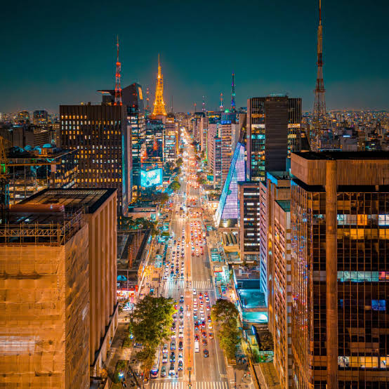

Informações Gerais sobre São Paulo
- Habitantes: Mais de 12 milhões
- Área: 1,200 km²
- Clima: Tropical, com verões quentes e úmidos e invernos amenos e secos
- Economia: São Paulo é o principal centro financeiro do Brasil
São Paulo é a minha cidade natal, e é a maior cidade do Brasil. É conhecida por sua diversidade cultural, gastronomia e vida noturna vibrante. O que é muito diferente do interior, principalmente de Votuporanga, que é uma cidade pequena e tranquila, com uma população de cerca de 100 mil habitantes. E o que temos de diversão é muito diferente e limitado, mas mesmo assim, é uma cidade muito bonita e calma, com muitas áreas verdes e parques. E é isso que eu mais gosto de São Paulo, a diversidade e a vida noturna, mas também gosto do interior, pela tranquilidade e segurança.


Veja o mapa abaixo da capital do estado de São Paulo: